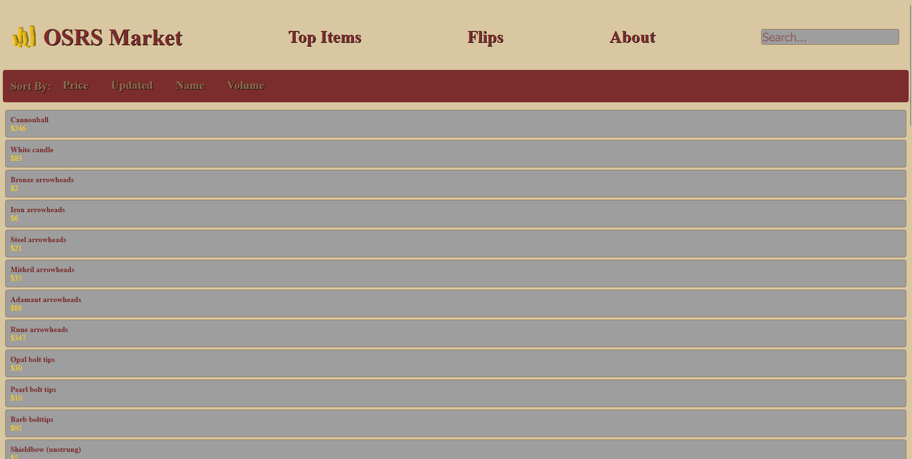

<!DOCTYPE html>
<html lang="en"></html>
        <head>
        <meta charset="UTF-8">
        <meta name="viewport" content="width=device-width, initial-scale=1.0">
        <title>Micah Luck portfolio</title>
        <link rel="stylesheet" href="style.css">
        <link
  href="https://fonts.googleapis.com/css2?family=Fira+Code:wght@300;400;500;600;700&display=swap"
  rel="stylesheet"
/>
    </head>
    <nav>
        <div class="nav-div">
            <a href = "#home" class="current-page">Home</a>
            <a href = "#projects">Projects</a>
            <a href = "#about">About</a>
            <a href = "#resume">Resume</a>
            <a href = "#contacts">Contacts</a>
        </div>
    </nav>
    <body>
        <div class="top-div">
            <header>Micah Luck<span id="letter">_</span></header>
            <h1>Computer Science Student</h1>
        </div>
        <p class="introduction">
            Welcome to my portfolio. Here you will find a collection of projects that showcase my work and interests as a developer!
        </p>
        <canvas id="sphereCanvas"></canvas>
        <section>
            <h1 style="margin-bottom: 1rem;" class = "section-header" id="projects">Projects</h1>
            <div>
            <div class="osrsMarket">
                
                <div class="marketDescription">
                    <h2 class="projectHeader"><a href="https://osrs.market">OSRS Market</a></h2>
                    <p class="projectDescription">
                        Osrs Market is a real time RuneScape market tracking website that collects, stores, and displays live price data. This was my first full web development project and required me to learn
                        everything from backend APIs to database design and server hosting.
                    </p>
                    <p class="projectDescription">
                        To gather and store price data, I got to learn SQL and set up a PostgreSQL database. I researched different data sources and ended up choosing a third party JSON dump API because of its update frequency.
                        I wrote a Node.js script that fetches API data, processes changes and updates the database only when prices changed by at least 1%.
                    </p>
                    <p class="projectDescription">
                        To host the backend, I built a home server running Proxmox, I learned how to manage Linux containers/Virtual Machines, and deployed the backend in an Ubuntu 24.04 LXC for efficiency. This was my first
                        experience with system administration, networking, virtualization, and Linux.
                    </p>
                    <p class="projectDescription">
                        For the frontend, I aimed for a classic RuneScape style with a clean layout resembling features from the early days of RuneScape. I implemented JavaScript based pagination that communicates with an
                        Express API, retrieves batches of 50 items, joins multiple database tables, and supports sorting by price, name, volume, and last update time. I also learned best practices to prevent SQL injection
                        and dynamic UI rendering from database content.
                    </p>
                    <p class="projectDescription">
                        This project taught me an incredible amount about backend development, APIs, SQL, Linux, Node.js, Express, server hosting, and frontend JavaScript. It gave me a strong foundation in full-stack
                        development and systems administration.
                    </p>
                </div>
            </div>
            
            </div>
            <div class=""></div>
        </section>
        <section>
            <h1 class = "section-header" id="about">About</h1>
            <p class="about">Hi! My name is Micah Luck, and I’m a second year computer science student at the University Of Cincinnati.  I have always loved computers since I was little, 
                I remember spending countless nights when I was 10 years old modding minecraft and setting up servers so that me and my friends could play together.
                That curiosity turned into a passion for problem solving and building things with code. Today I am working on a few different projects alongside my coursework, including a market predictor, machine learning model, and an Unreal Engine based game.</p>
            <p class="about">Outside of programming I have many different interests and influences.  I love staying active, running, playing basketball or soccer, and snowboarding whenever I can.
                I also have a huge interest and appreciation for music and art, always exploring different genres and creative styles.</p>
        </section>
        <section>
            <h1 class = "section-header" id="resume">Resume</h1>
            <canvas id="resume1"></canvas>
            <h2 class="resume-download"><a href="Micah Luck Resume.pdf" download="" id="download-button">Download Resume</a></h2>
        </section>
        <section>
            <h1 class = "section-header" id="Contacts">Contacts</h1>
            <p style="font-size: 2rem;">Interested in working together or have a question? Please reach out through any of the links below:</p>
            <div class="contact-div">
                <a href="mailto:luckmicah77@gmail.com">luckmicah77@gmail.com</a>
                <a href="https://www.linkedin.com/in/micah-luck-924b8b313/" target="_blank">LinkedIn</a>
                <a href="https://github.com/mykah10000" target="_blank">GitHub</a>
            </div>
        </section>
        <script src="sphere.js"></script>
    </body>
</html>